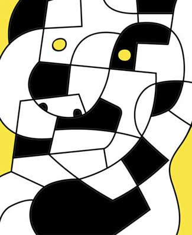
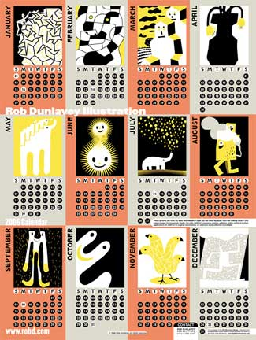
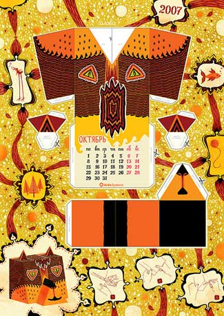
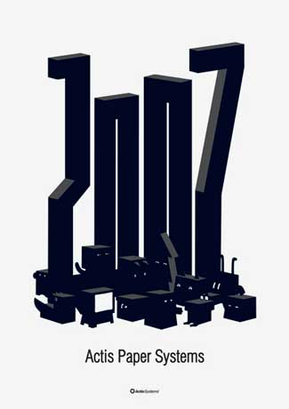
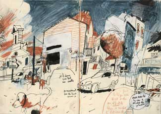
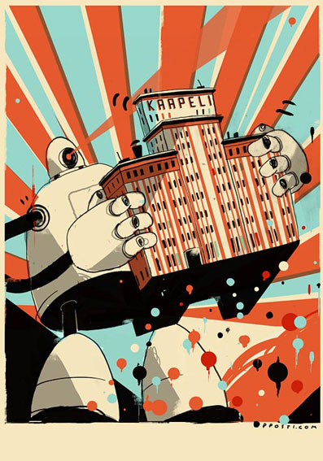
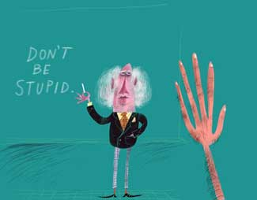
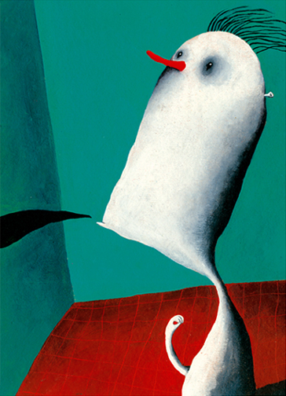
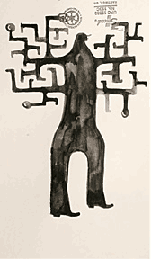
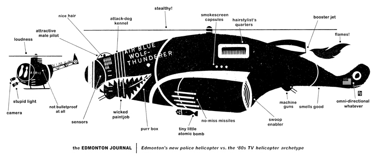

О ГЛАВНОМ
Движение = жизнь
Отлетали, слава богу, праздничные фейрверки и можно начинать шевелиться. Жить, что называется.


Календарь, правда, на 2006й, но уж больно художник симпатичный. Больше Бобов Стааке хороших и разных!
К слову, выявилась под новый год (раньше я не встречал) и заснула, видимо, до следующего тенденция заказывать календари нескольким художникам — по три-четыре месяца на нос. Я, в принципе, не возражаю, но вообще-то странная, конечно.


Однако вернемся к нашим общим местам. Начать — год — хочется с главного. Я как-то говорил уже о том, что, на мой взгляд, важно и что неважно, и что-то меня подталкивает эту тему развить, вот в каком ключе. Нет, на мой взгляд, художников хороших и плохих. Есть только живые и неживые. Чтобы отличить живого от неживого, достаточно чувствительных ноздрей: от неживого непременно веет могильным холодом, а то и чем похуже. В остальном — сходство полное: неживым удается десятилетиями скрываться среди живых, брезгливо принюхиваясь вместе с ними к неприятному запаху; более того, многие и не подозревают о том, что давно умерли. Но главное то, что нарисованное неживым никого не заставит пуститься в пляс или хотя бы постучать в такт происходящему на картинке ногой. Собственно, на этих картинках, изображающих разного рода персонажей, так или иначе взаимодействующих, таинственным образом вообще ничего не происходит. Удивительный парадокс. Смотришь, например, на эротическую сцену, а видишь паутину, колеблемую сквозняком: склеп.

(напомню: о чем бы ни шла речь, примеры я привожу только положительные. Я, видите ли, пуглив и лишний раз в пустоту стараюсь не заглядывать — вдруг засосет.)
От печальной участи не спасают ни высокое образование (как мне приходилось уже с прискорбием отмечать), ни кропотливая работа, ни ежедневная медитация — и даже наоборот. Но надежда есть. По крайней мере, история знает множество художников, успешно ее избежавших (я не о тех, что висят в музеях, но там всегда найдется кто-нибудь, нужно только смахнуть пыль).

Жизнь — в движении, я так полагаю. Причем опять же, речь не о движении персонажей, и даже не о движении руки с кистью или чем там — но о неком внутреннем движении. Известный гитарист Фрипп в одном интервью сказал: мне, мол, интереснее как музыкант надевает на плечо гитару, чем то, что он потом собственно играет. Фрипп, положим, все разузнал про игру на гитаре, но и нам с вами не мешает помнить про тот ремень.

Susanna Campana

Оговорюсь: движение внутреннее сообщает какую-то особенно правильную пластику и руке, и самому рисунку. Пожалуй, что движение есть самое важное понятие в рисовании. Это та пружина, которая заставляет его «идти», как идут часы, и та, которая взведена (сюда же еще дорогое моему сердцу понятие кривоты, или кривизны — которая суть изгиб этой самой пружины).

В связи с этим, кстати, каждый раз меня охватывает глубокое недоумение, когда ту или иную иллюстрацию упрекают в «отрицательной динамике»- так, кажется, называется таинственное правило, согласно которому приплясывать разрешается только слева направо и по возможности снизу вверх. Не понимаю. Движение — оно либо есть, либо его нет.

Я подозреваю, что это самое внутреннее движение суть ничто иное, как эмоция. Положительная или отрицательная, любая, не равная только нулю. Этот орган, способность реагировать на что-либо и требовать в свою очередь реакции, имеется у всех практически людей, но. Вот вам мое программное заявление: нам, художникам, надо этот орган качать. Пора, однако, выпутываться из тонких материй. Хочу пожелать вам, друзья, движения. Слушайте побольше музыки. И если кто вдруг заметит, что посинел, пусть с ним по случаю нового года произойдет чудо.